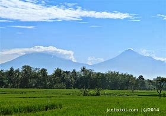
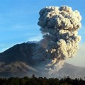
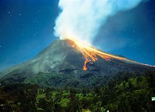
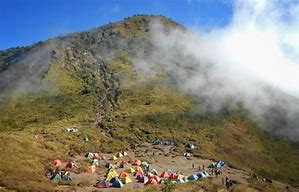
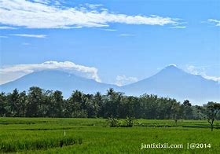
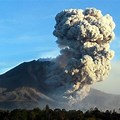
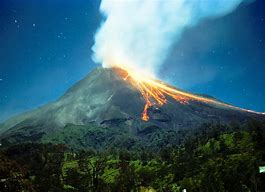
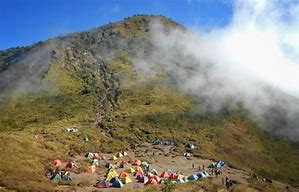

About Gunung Merbabu
Gunung Merbabu adalah salah satu gunung berapi stratovolcano yang terletak di provinsi Jawa Tengah, Indonesia. Dengan ketinggian 3.145 meter di atas permukaan laut, Gunung Merbabu menawarkan pemandangan yang menakjubkan dan jalur pendakian yang menantang. Gunung ini sangat populer di kalangan pendaki lokal dan internasional, serta merupakan salah satu destinasi favorit bagi para pecinta alam dan petualangan
Gunung Merbabu adalah salah satu gunung berapi stratovolcano yang terletak di provinsi Jawa Tengah, Indonesia. Dengan ketinggian 3.145 meter di atas permukaan laut, Gunung Merbabu menawarkan pemandangan yang menakjubkan dan jalur pendakian yang menantang. Gunung ini sangat populer di kalangan pendaki lokal dan internasional, serta merupakan salah satu destinasi favorit bagi para pecinta alam dan petualangan. Nama "Merbabu" berasal dari kata "Meru" yang berarti gunung, dan "Abu" yang berarti abu. Gunung ini memiliki sejarah letusan yang cukup panjang, meskipun tidak seaktif gunung-gunung berapi lain di Indonesia. Letusan terakhir tercatat pada tahun 1797, dan sejak itu, Merbabu dikenal sebagai gunung yang relatif tenang. Legenda setempat menyebutkan bahwa Gunung Merbabu adalah tempat tinggal para dewa dan roh-roh leluhur. Masyarakat sekitar percaya bahwa gunung ini memiliki kekuatan mistis yang kuat dan sering melakukan upacara adat untuk menghormati para dewa dan meminta perlindungan selama pendakian. Gunung Merbabu memiliki beberapa jalur pendakian yang populer, antara lain: Gunung Merbabu dikenal dengan keindahan alamnya yang luar biasa. Selama pendakian, pendaki akan melewati berbagai macam vegetasi, mulai dari hutan tropis, hutan pinus, hingga padang rumput yang luas. Puncak Gunung Merbabu menawarkan pemandangan panorama yang spektakuler, di mana pendaki dapat melihat Gunung Merapi, Gunung Sindoro, Gunung Sumbing, dan Gunung Slamet. Salah satu daya tarik utama Gunung Merbabu adalah padang rumput yang luas di ketinggian sekitar 2.700 meter. Padang rumput ini dikenal sebagai Sabana 1 dan Sabana 2, dan menjadi tempat favorit untuk berkemah dan menikmati matahari terbit. Keindahan matahari terbit di Gunung Merbabu adalah salah satu momen yang paling dinantikan oleh para pendaki. Gunung Merbabu memiliki keanekaragaman hayati yang cukup tinggi. Hutan di Gunung Merbabu menjadi habitat bagi berbagai jenis flora dan fauna, termasuk beberapa spesies yang dilindungi. Beberapa jenis flora yang dapat ditemukan di Gunung Merbabu antara lain edelweiss, pohon pinus, dan berbagai jenis anggrek liar. Untuk fauna, Gunung Merbabu merupakan rumah bagi beberapa jenis satwa seperti lutung, elang Jawa, kera ekor panjang, dan berbagai jenis burung. Keanekaragaman hayati ini menjadikan Gunung Merbabu sebagai salah satu lokasi penting untuk konservasi alam. Pendakian Gunung Merbabu membutuhkan persiapan yang matang. Berikut adalah beberapa tips untuk pendakian: Gunung Merbabu adalah salah satu destinasi pendakian yang menawarkan
keindahan alam dan tantangan yang luar biasa. Dengan persiapan yang baik dan kesadaran akan pentingnya konservasi alam, pendakian Gunung Merbabu akan menjadi pengalaman yang tak terlupakan. Mari kita jaga kelestarian Gunung Merbabu agar generasi mendatang juga dapat menikmati keindahannya.Artikel tentang Gunung Merbabu
Gunung Merbabu: Keindahan dan Tantangan Pendakian di Jawa Tengah
Pendahuluan
Sejarah dan Legenda
Jalur Pendakian
Keindahan Alam
Flora dan Fauna
Persiapan Pendakian
Penutup
Gallery

 







.jpeg)